FindEZ hero morph comparisons
Chrome screenshots from local Next dev and the supplied reference. Click any pair for full resolution. The existing site header is intentionally retained, so its height and contents differ from the reference stand-in.
1440x900, scroll 0px
Reference on the left. Site on the right.
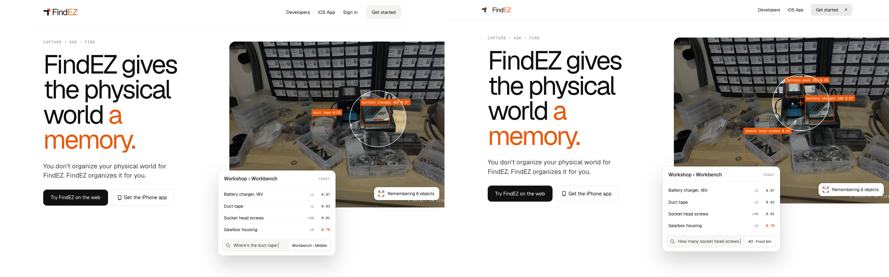
1440x900, scroll 500px
Reference on the left. Site on the right.
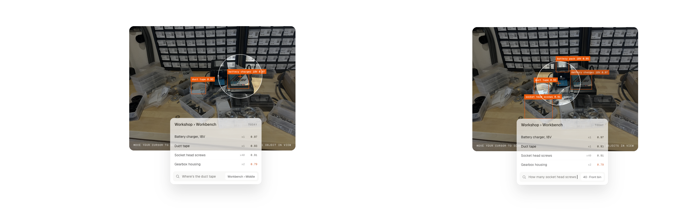
1440x900, scroll 900px
Reference on the left. Site on the right.
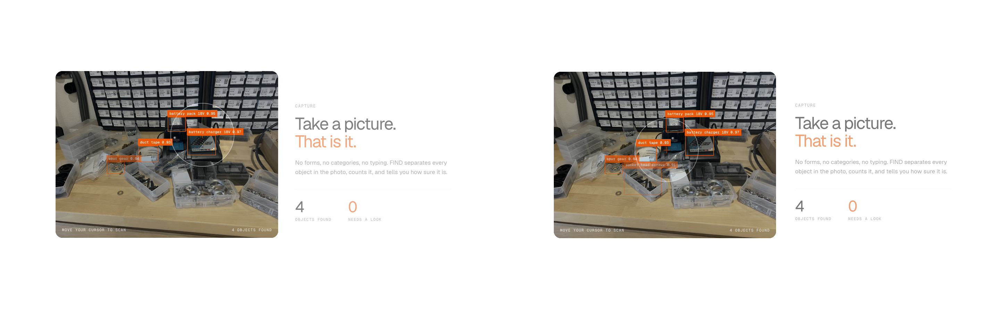
1440x900, scroll 1400px
Reference on the left. Site on the right.
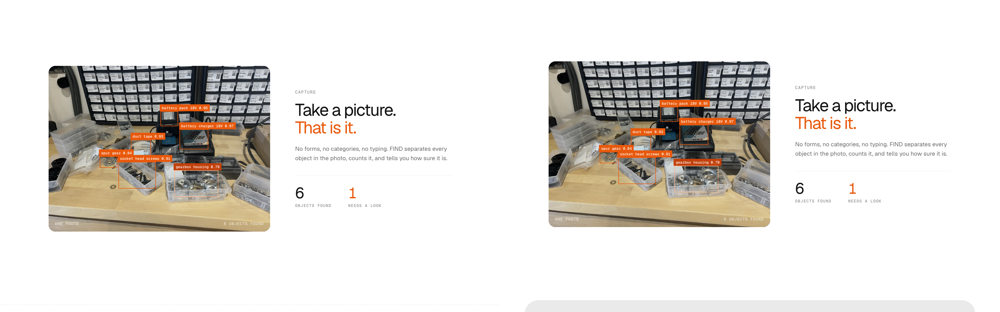
1280x720, scroll 0px
Reference on the left. Site on the right.
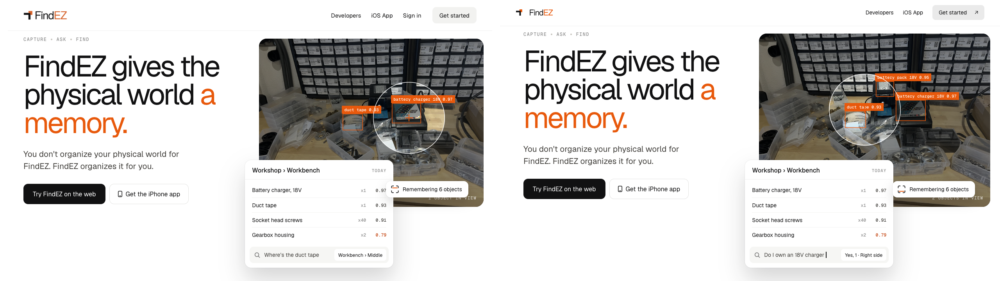
1280x720, scroll 500px
Reference on the left. Site on the right.
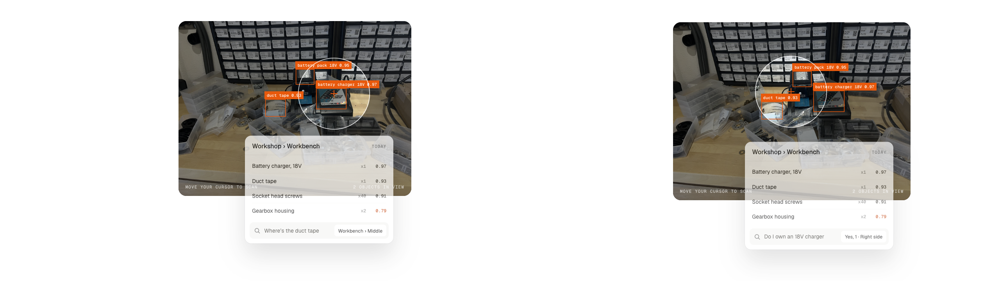
1280x720, scroll 900px
Reference on the left. Site on the right.
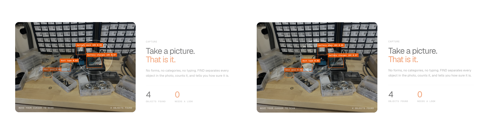
1280x720, scroll 1400px
Reference on the left. Site on the right.
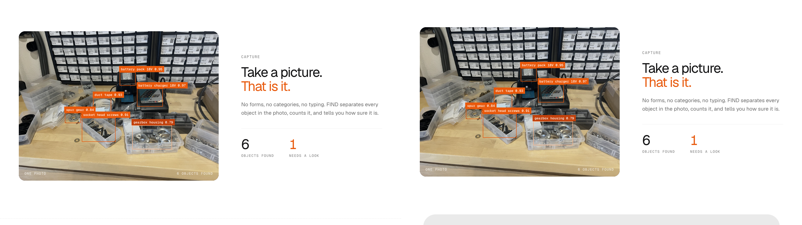
390x844, scroll 0px
Reference on the left. Site on the right.
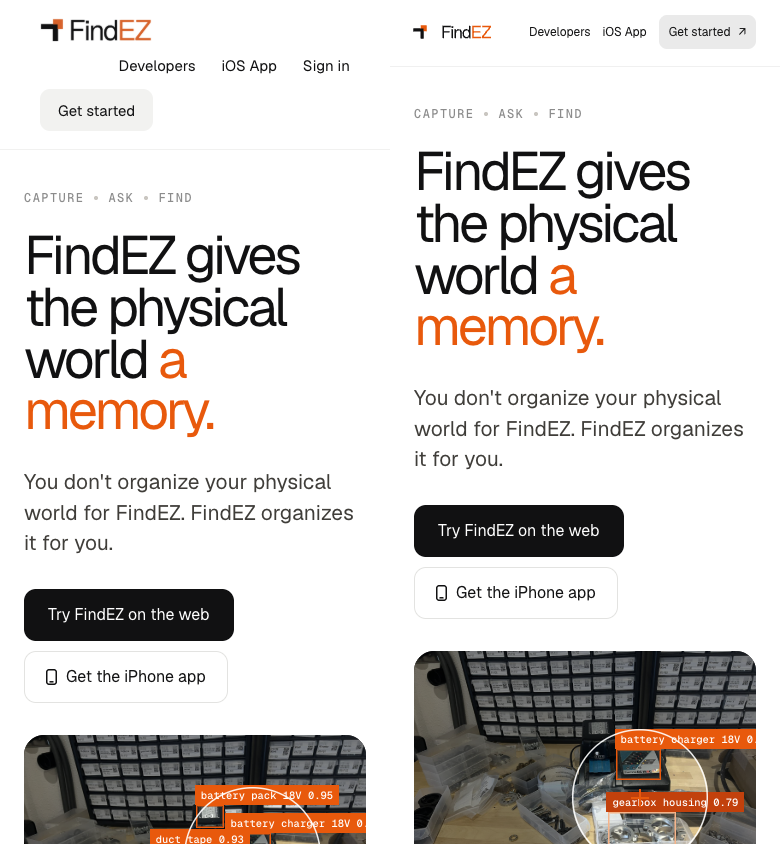
390x844, scroll 500px
Reference on the left. Site on the right.
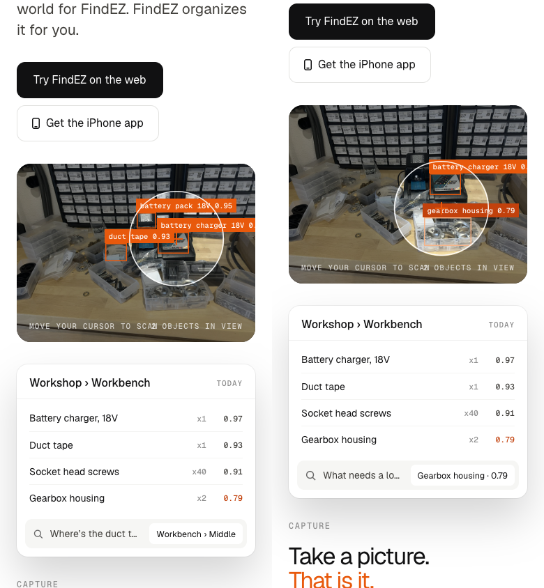
390x844, scroll 900px
Reference on the left. Site on the right.
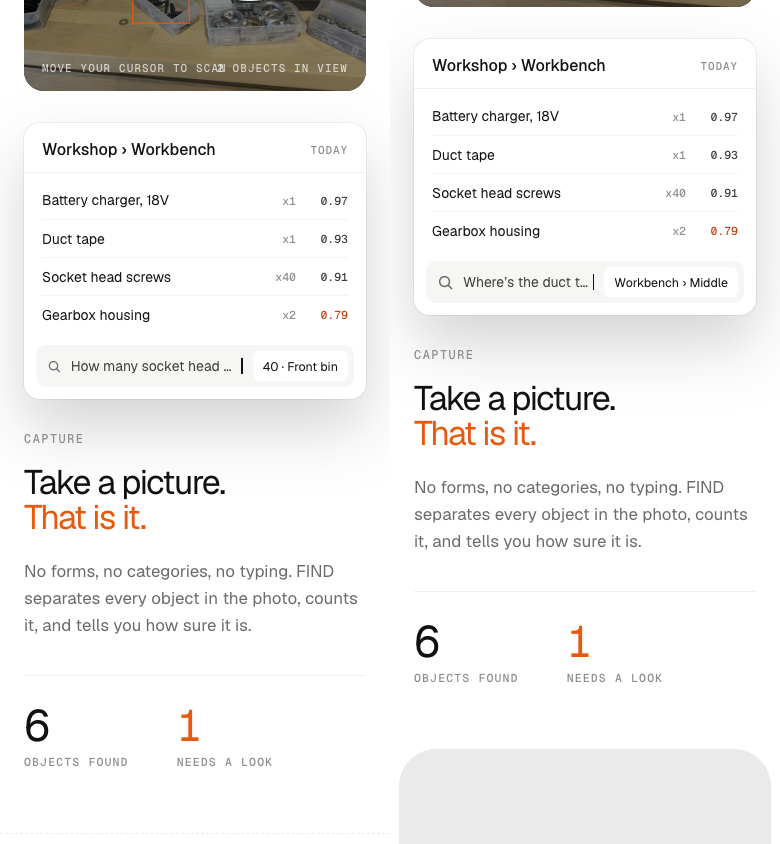
390x844, scroll 1400px
Reference on the left. Site on the right.
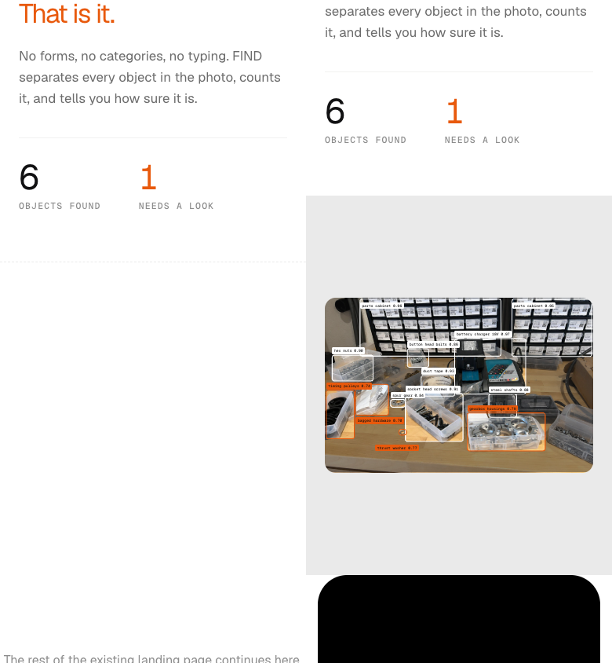
Interaction results